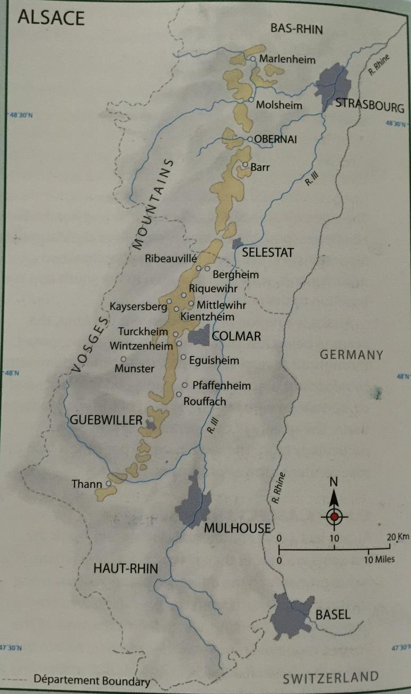

Alsace
概述
基本情况
- 葡萄园面积 15000ha
- 位于德法之间
- 西靠 Vosges 山脉，东临 Rhine 河
- 文化和酿酒都受到德法双方影响
历史发展
- 一战前由德国所有
- 生产大批量葡萄酒
- 根瘤蚜爆发后，种间杂交品种大量种植
- 山坡土地大量废弃
- 归属法国后的发展：
- 1925 年禁止 hybrid vines
- 1962 年建立 AC 体系
- 1972 年确立笛形瓶规范
- 二战后才建立葡萄酒声望
- 90%为白葡萄酒
地理位置
- 全长 140km，东西很窄（4km）
- 跨过两个法国省份：
- 南边的 Haut-Rhin 省
- 北边的 Bas-Rhin 省
- 遍布许多小的 commune：
- Eguisheim
- Guebwiller
- Pfaffenheim
- Ribeauville
- Riquewihr
- Turkheim
- Barr 等
- 特点：
- 南部集中更多生产商
- 质量更高
- 特别适合琼瑶浆、灰皮诺等饱满品种

气候
总体特征
- 凉爽的大陆性气候
- 秋季漫长而干燥
- Vosges 山脉阻挡西边带雨的风
- Lorraine 为全法最潮湿地区之一
- Alsace 为全法最干燥地区之一
具体数据
- 年均降雨量 500mm
- 夏季晴朗炎热
- 秋季晴朗干燥
- 年日照超过 1800 小时
- 葡萄能获得极高糖分含量
气候挑战
- 炎热年份可能出现干旱
- 夏季偶有暴风雨夹杂冰雹
- 寒冷冬季：
- 让葡萄休眠
- 极冷天气可能冻死葡萄藤
- 春霜是个问题
- Colmar 镇附近温度比 Alsace 平均温度高出一度
土壤
葡萄园位置
- 最好的葡萄园在陡峭斜坡上
- 斜度可达 40 度
- 朝向东或东南
- 北部 Bas-Rhin 省特点：
- 气候凉爽
- 受山脉保护较少
- 平原葡萄难以充分成熟
- 平原葡萄多用于 Cremant d'Alsace
土壤类型
地质变迁频繁，土壤类型丰富：
-
山顶：
- 土层薄
- 土壤类型：
- granite
- 片麻岩 gneiss
- schist
- quartz
- clay
- volcanic
- sandstone
- 分布在不同村庄之间
-
山脚斜坡：
- 土壤类型：
- limestone
- sandstone
- clay
- marl
- 土层厚度：50cm 到 6m 不等
- 土壤类型：
-
平原：
- 以冲积土 alluvial 为主
- 类型多样
- 需要根据土壤选择合适 rootstock
土壤影响
- heavier 的 clay 和 marl 倾向生产更加饱满浓郁的风格
- lighter 的 limestone 和 sandstone 倾向生产更加轻盈优雅的风格
- schist、slate 等土壤有更多 oily，mineral 的风味（如 gunflint）
品种
概述
- 品种比产区更为关键
- 只有四个贵族品种可以做 VT、SGN 和 Grand Cru
- 其他品种也可标注在酒标上
- 最优质酒特点（除 VT 和 SGN 外）：
- 干型
- 饱满
- 较高酒精度
- 兼具果香和香料气息
- 近期趋势：
- 越来越多葡萄酒（尤其 Grand Cru 级别）开始有明显甜度
- 缺乏甜度标示法规，消费者难以通过酒标区分
主要品种
Riesling：
- 种植量：约占 25%，最广泛的贵族品种
- 风格特点：
- 与德国风格不同
- 优质雷司令展现：
- 饱满酒体
- 干型
- 较高酒精度（12.5%左右）
- 高酸
- 明显打火石 flinty 矿物感
- 凉爽气候下的花果香气
- 现今多保留残糖
- 特性：
- 能很好反映风土
- 制作极为优质的 VT 和 SGN 风格
- 果粒较硬
- 成熟时间晚
- 适合晚收
- 喜欢 granite 和 schist 土壤
- 最好葡萄园：来自 Wolxheim、Dambach-la-Ville、Scherwiller 等小镇周围
Gewurztraminer：
- 特征：
- 充满甜香料、荔枝、玫瑰等香气
- 表皮粉红
- 酒色金黄
- 风格：
- 饱满而油滑
- 干型或 off-dry
- 酸度中低
- 酒精度高，常超过 14 度
- 口感偏甜
- 种植：
- 常种植在山脚下较深的 marl，clay soils
- 占 20%种植量
- 特别适合 VT 风格：
- VT 风格有夸张的异域果香
- 搭配：
- 熏鱼
- 奶酪
- 中式/泰式餐点
- 最好葡萄园：来自 Barr 等小镇周围
Pinot Gris：
- 历史：
- 以前标作 Tokay d'Alsace 或 Tokay Pinot Gris
- 06 年后为防歧义删去 Tokay
- 产量：占 12%左右
- 最好的灰皮诺特点：
- 酒色金黄
- 饱满
- 高酒精度
- 风味不那么芳香但入口结构饱满
- 风味浓郁
- 充满新鲜水果和果干风味
- 有些烟熏、蜂蜜味
- 往往含有一点残糖
- 用途：
- 能生产优质 VT 和 SGN 风格
- 也做起泡酒
- 种植特点：
- 产量不稳定
- 适合 clay 含量高的较深细腻土壤
- 适合火山岩土壤
- 最好葡萄园：来自 Obernai 和最北部的 Cleebourg 等小镇
Muscat：
- 地位：贵族品种但种植量只占 3%
- 种植难点：
- 容易落花 coulure 和腐烂 rot
- 产量不稳定
- 品种：
- 最好的是小粒麝香（Muscat a Petit Grain，也叫 Muscat d'Alsace）
- Muscat Ottonel 种植量更多（产量更稳定但风味较淡）
- 风格：
- 往往是干型
- 充满麝香葡萄香气
- 酒精度和酸度都较低
- 种植：
- 适合 sandy 和 calcareous 土壤
- VT 和 SGN 风格不太常见
Pinot Blanc 和 Auxerrois：
- 混合特点：
- 两个品种常混合生产
- 酒标写 Pinot Blanc 表示两个品种混合
- 酒标写 Auxerrois 表示单一品种
- 风格特点：
- Pinot Blanc：细腻的苹果、桃子和花香，口感轻柔，酸度新鲜
- Auxerrois：与 Pinot Blanc 相似，但更饱满和有香料味
- 种植量：
- 两品种加起来约占 20%
- 比 Riesling 略少
- 产量逐渐增加
- 种植特点：
- 早熟（在 Alsace 第一个成熟）
- 能适应肥沃平坦土地
- 不需要贫瘠斜坡
- 用途：
- 常用于起泡酒
- 生产轻盈新鲜，相对 neutral 的静止酒
- 酒体饱满度和香气复杂性不及贵族品种
- 也能生产很少量的 VT、SGN 和 Grand Cru
Sylvaner：
- 种植情况：
- 曾种植面积广
- 如今剩 9%
- 集中在 Bas-Rhin
- 产品特点：
- 口感轻柔
- 低酒精度（10.5-11.5%）
- 高产量
- 风味：
- 精致的白花、青草、柑橘香气
- 有一定饱满度
- 远不及琼瑶浆
- 适合年轻时饮用
- 特殊情况：
- 只有少量老藤和特殊风土能制作出优质的类似 Franken 的 sylvaner
Pinot Noir：
- 种植：
- 出于对红葡萄酒需求，种植量增加
- 占 10%
- Alsace 唯一红葡萄品种
- 特点：
- 缺乏酒体和浓缩度
- 属于轻盈果香型红酒或桃红
- 创新：
- 部分生产者尝试用新橡木桶培养以酿造更加饱满风格
- 用途：
- 生产起泡酒 Cremant Rose 和 Blanc de Noirs
- 不需要用笛形瓶装瓶
- 种植：常种植在与勃艮第相似的 sandy 和 limestone 土壤上
- 优质产区：
- Bas-Rhin 的 Ottrott、Marlenheim
- Haut-Rhin 的 Rodern
其他品种：
- Chasselas：
- 存在于 Edelzwicker 和 neutral wine 中
- 不允许种植新葡萄藤
- 计划逐渐淘汰
- 能在各式土壤和气候下生存
- Chardonnay：
- 可用于起泡酒
- 可标为 Pinot Blanc
- 与 Pinot Blanc 外形相似
种植
种植方式
- 斜坡栽培：
- 整形靠近地面
- 根据朝向设计以获取最多阳光辐射
- 手工采摘
- 平原栽培：
- 葡萄藤栽培较高以减少春季霜冻影响
- 可以允许机械采摘
整形方法
- Single/Double Guyot 是常用整形方式
- 种植密度大（4400-4800 株每公顷）
- 老藤则更多采用 Cordon-trained 方法
- 产量控制：
- 最高产量限制不严格
- 可达 100hl/ha，每年浮动
- 优质酒产量一般在 40-50hl/ha
种植特点
- 有机和生物动力常见：
- 生产者愿意展示风土特色
- 病虫害威胁较少
- 行间管理：
- 常种些草以防水土流失
- 限制葡萄产量
- 减少潮湿和真菌威胁
采收挑战
- 不同地块种植不同品种
- 品种成熟时间不一
- 采收季漫长（9 月中旬到 11 月底或 12 月初）
- 除正常成熟葡萄外还有：
- 晚收酒
- 贵腐酒
- vin de paille
- eiswine
酿造
酿造理念
- 认为最好的葡萄酒来自最少人工干预
- 目标是展现并最大化保持第一类果香
酿造工艺
- 压榨：
- 使用 pneumatic press 充气式压榨机
- 3 小时内完成以减少果皮接触
- 发酵：
- 在古老大型橡木桶中发酵
- 这些橡木桶常超过百年历史
- 有厚厚的酒石酸沉淀（tartrate deposit）
- 不会给酒增加任何风味
- 现代酒庄：
- 不锈钢容器更常见
- 可以控温
- 其他特点：
- Chaptalisation 很常见（全球变暖后在减少）
- 发酵后残留糖份很普遍
- 发酵一般持续 3-4 周
- racking 后与 fine lees 继续接触
MLF 使用
- 除了 Pinot Blanc，一般不常经过 MLF
- 避免破坏果香的新鲜度
- 但也时有发生
装瓶时间
- 一般酒：
- 在来年春季装瓶
- 适合立即饮用
- 新鲜而年轻
- 优质酒：
- 经历一段时间酒泥接触
- 在来年五到八月装瓶
- 有的可以经历瓶中陈年以发展复杂风味
法规
概述
- 从某种意义上来讲，Alsace 的法规十分简单
- 只有两个 AC
- 生产者常使用未法定的术语宣告质量：
- Reserve Personnelle
- Cuvee Speciale
- 静止酒占 75%
Alsace AC
- 建立：1962 年
- 产量占比：约 70%
- 特点：
- 大多数是白葡萄酒
- 产量限制为 80hl/ha
- 酒标要求：
- 常出现品种名称（表示 100%单一品种）
- 也有少量 blends
- 都用当地笛形瓶（flutes d'Alsace）装瓶
- 如标注村庄或 lieu-dit 名字：
- 需遵循更严标准
- 需更小产量
Alsace Grand Cru AC
- 建立：1975 年
- 特点：
- 有 51 个规定范围的葡萄园
- 产量仅占 4%
- 严格规定：
- 必须来自单一葡萄园
- 较低最大产量（55hl/ha）
- 较高种植密度
- 必须人工采摘
- 较高成熟度
- 必须使用贵族品种（雷司令、麝香、琼瑶浆和灰皮诺）
- 例外情况：
- Kaefferkopf 和 Altenberg de Bergheim 允许不同品种 blending
- Zotzenberg 允许 Sylvaner
- 特别规定：
- 每个特级园可通过工会更严格规定
- 可包括：禁止 chaptalisation、限定品种、确定采收日期等
- 酒标要求：
- 需标注葡萄园名称
- 年份
- 品种（100%的情况下）
特级园争议
- 主要问题在于葡萄园边界
- 原因：
- 无按葡萄园卖酒习俗
- 最好地块未能清楚划分
- 导致问题：
- 许多特级园面积过大
- 有的达不到很高质量水平
- 如 schlossberg 超过 80ha
- 因此生产商也很重要
VT 和 SGN 术语
- 根据葡萄成熟度划分
- 类似德国 Pradikate 分级
- Alsace AC 和 Alsace Grand Cru AC 都可使用
Vendange Tardive（VT）：
- 晚收葡萄
- 品种要求：只能用四种贵族品种
- 糖分要求：
- Riesling 和 Muscat：14%（糖含量 220g/L）
- Pinot Gris 和 Gewurztraminer：15.3%（糖含量 243g/L）
- 基本相当于德国 Auslese
- 特点：
- 最好的葡萄经历风干 passerillage
- 可能有贵腐影响
- 禁止糖强化
- 可从干型到中等甜度
- 法律无具体要求
- 监管：
- 需要当局监管
- 设定采收日
- 检测糖度
- 装瓶后的检测
Selection de Grain Nobles（SGN）：
- 贵腐精选
- 品种要求：只能用四种贵族品种
- 糖分要求：
- Riesling 和 Muscat：16.4%（糖含量 256g/L）
- Pinot Gris 和 Gewurztraminer：18.2%（糖含量 279g/L）
- 其他规定与 VT 一致
- 基本相当于德国 Beerenauslese
- 特点：
- 不是年年生产
- 产量极小
- 都是甜型
- 贵腐影响程度各不相同
市场
产业结构
- 葡萄田归属分散：
- 酒农平均田产不到 3 公顷
- 总共 4000 多个酒农
- 超过 2000 个田地不到 2ha
- 这些酒农不单靠葡萄种植或酿酒维生
- 田产分布：
- 一半属于酒农
- 1/3 属于 co-operative
- 酒商拥有不到 5%
- 酒商向酒农购买大量葡萄
酿酒生产
- 由 negociant 主导
- 代表：Hugel 和 Trimbach
- 合作型酒庄也生产高品质葡萄酒
- 产量分布：
- 酒商 41%
- 合作性酒庄 39%
- 独立酒农 20%
- 生产特点：
- 小酒农生产 6-8 种不同葡萄酒
- 大生产商可达 20-30 种
市场销售
- 25%用于出口
- 主要市场：
- Belgium/Luxembourg
- 荷兰
- 德国
- 丹麦
- 英美等
重要生产商
Hugel：
- 地位：Alsace 最知名最古老生产商之一
- 历史：建立于 17 世纪
- 规模：自有 26ha 葡萄园
- 主要品种：
- Riesling
- Gewurztraminer
- 灰皮诺
- 黑皮诺
- 产品线：
- 普通系列
- 较饱满的 tradition 系列
- 最好的 Jubilee 系列
- 特别优质的 VT 和 SGN
- 态度：
- 反对 Grand Cru 体系
- 认为不能代表质量
- 经营模式：
- 既是酒商也购买葡萄
- 基本系列用购买的葡萄
- 高端系列用自己葡萄园葡萄
Trimbach：
- 历史：建立于 17 世纪
- 特点：
- 古老而知名
- 酒风格果香精美
- 酸度较高
- 有不错陈年能力
- 著名产品：
- Clos Ste-Hune Riesling
- Cuvee Frederic Emile Riesling
- 优雅、珍稀且极能陈年
- 经营模式：既是酒商也是葡萄种植者